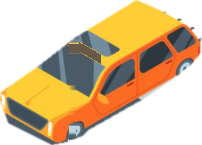

Accepting or Yielding Right-of-Way
Texas law defines right-of-way as a duty to surrender passage, not an automatic entitlement. Master crucial priority protocols across terminating T-intersections, highway freeway off-ramps, active grade crossings, and work zones.
Right-of-way is given, never taken. Even if another driver commits a statutory violation by failing to yield, Texas Transportation Code § 545.401 obligates every motorist to exercise universal due care to avoid collision.
Right-of-Way at Intersections
Observe the uncontrolled T-intersection scenario below. Vehicle A travels on the continuous through-street, while Vehicle B approaches from the terminating street. Test statutory priority:





Statutory Analysis Pending
Under Texas Transportation Code § 545.152, an operator on a roadway that terminates at an intersection with another roadway without traffic controls must yield the right-of-way to any vehicle on the intersecting roadway.
Highway Frontage Roads & Multi-Lane
Texas has a unique statutory rule governing access roads and freeway exit ramps. Below is a multi-lane highway corridor alongside a one-way continuous frontage road:
EXITING
STRAIGHT
Who has the right-of-way?
Car X (Exiting Vehicle) has the statutory right-of-way. The vehicle on the frontage road (Car Y) must yield to the vehicle exiting the freeway.
Unlike many other states, Texas law explicitly specifies that traffic traveling on an access or frontage road must yield the right-of-way to a vehicle entering or about to enter the frontage road from a controlled-access highway. High freeway exit momentum creates lethal rear-end crash risks if exiting cars are forced to stop on an active off-ramp.
Railroad Crossings & Stopping Distance
When an electrical flasher, mechanical gate, or approaching train signals danger, Texas statute establishes a rigid physical safe stopping window. Drag the slider below to position your vehicle:
What If Your Vehicle Stalls on the Tracks?
1. Evacuate immediately: Get all occupants out of the vehicle at once, even if no train is visible.
2. Run toward the oncoming train at a 45-degree angle away from the tracks. If a collision occurs, train impact propels vehicle debris forward.
3. Locate the blue and white ENS sign: Mounted on the crossbuck or signal mast. Call the 1-800 dispatch number and read the unique USDOT Crossing ID to immediately halt incoming train traffic.
Construction Zones & Barricades
In Texas highway work zones, violations carry severe statutory enhancements to safeguard transportation workers. Toggle the condition below to observe fine escalation:
Work Zone Fine Multiplier
Standard designated highway work zone corridor without active labor crew present.
Under Texas law, traffic fines automatically double for moving violations committed in a maintenance or construction zone whenever workers are actively present on or near the roadway.
Driving Around a Road Barricade is a Class B Misdemeanor
In Texas, knowingly driving around or ignoring an authorized road closure barricade where water is over the roadway is classified as a Class B Misdemeanor punishable by: